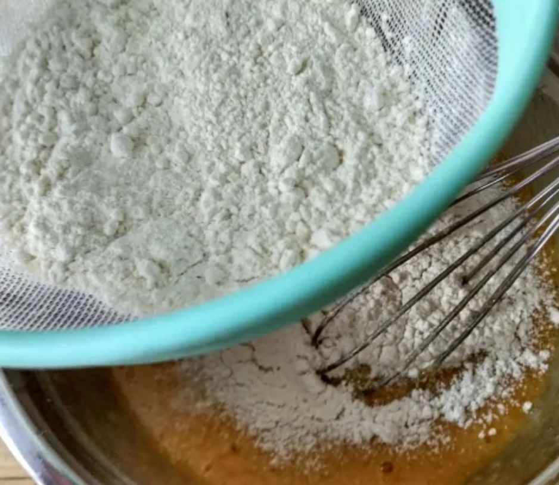
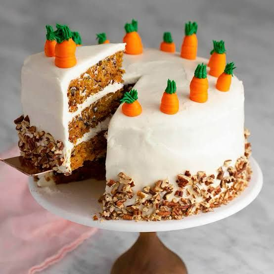

PASTEL DE ZANAHORIA
Ingredientes
1 taza de aceite (240 ml)
4 huevos (200 g)
2 cucharadas de extracto de vainilla (30 ml)
3¾ tazas de zanahoria (300 g) rallada
¼ de taza de coco seco sin azúcar (20 g)
½ taza de piña en almíbar (100 g) picada finamente
2 tazas de harina (280 g)
1 cucharada de polvo para hornear (10 g)
1 cucharadita de bicarbonato (4 g)
1 cucharada de canela molida (8 g)
1½ tazas de azúcar (300 g)
1½ tazas de nueces picadas (180 g)
Preparación
Mezclar con un batidor globo el aceite, los huevos, el extracto de vainilla,
la zanahoria rallada, el coco seco y la piña picada.
Combinar en un tazón la harina, el polvo para hornear, el bicarbonato, la
canela molida, el azúcar y las nueces picadas.
Combinar ligeramente ambas preparaciones y vaciar en el molde.
Hornear el pan a 180 ºC durante 1 hora o hasta que al insertar en el
centro del pan un palillo, éste salga limpio.
Retirar el pan del horno y dejarlo enfriar.
Ingredientes para el Betún
4 tazas de queso crema (760 g)
¼ de taza de mantequilla (50 g)
1 cucharada de ralladura de naranja (5 g)
2 cucharadas de extracto de vainilla (30 ml)
1 vaina de vainilla
3 tazas de azúcar glass (350 g)
Preparación para el Betún
Suavizar el queso crema con la mantequilla utilizando una batidora eléctrica.
Agregar la ralladura de naranja, el extracto y el interior de la vaina de vainilla.
Incorporar el azúcar glass gradualmente, batiendo hasta que el betún quede terso.
Montaje
Cortar el pan de manera horizontal en 4 capas del mismo grosor.
Colocar el betún en la manga pastelera con duya.
Cubrir una capa de pan con pequeñas esferas de betún de queso, colocar
encima otra capa de pan y repetir la operación 2 veces más.
Cubrir la última capa de pan con betún.
Poner en el centro del pastel el nido y el huevo de chocolate y decorar con las nueces troceadas.
 